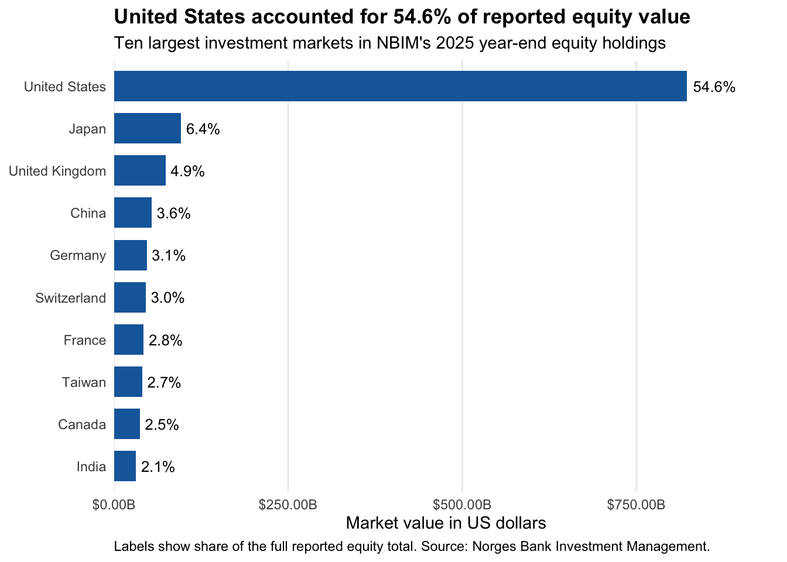
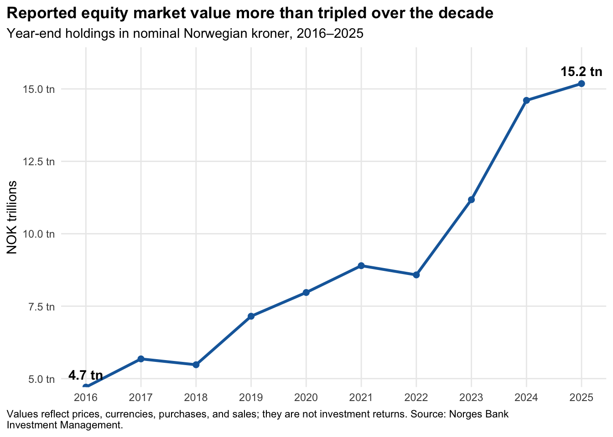

library(tidyverse)
library(scales)
gpfg <- read_csv(
"data/processed/gpfg_equities_latest.csv",
show_col_types = FALSE
)
latest_year <- unique(gpfg$year)
country_summary <- gpfg |>
summarise(
market_value_usd = sum(market_value_usd),
.by = country
) |>
mutate(share_of_total = market_value_usd / sum(market_value_usd)) |>
arrange(desc(market_value_usd))
top_10_countries <- country_summary |>
slice_head(n = 10)
top_country <- top_10_countries |>
slice_head(n = 1)11 Explanatory Visualization
11.1 Learning objectives
By the end of this chapter, you should be able to:
- design a chart around one defensible takeaway;
- order and label comparisons clearly;
- show units, dates, sources, and transformations;
- remove visual elements that do not serve the evidence; and
- write a headline and caption that match the calculation.
11.2 Begin with a chart brief
Before coding, complete five lines:
- Audience: Who needs to understand this?
- Question: What exact comparison matters?
- Takeaway: What does the analysis show?
- Chart form: Why is this form appropriate?
- Caveat: What must the caption or story explain?
We will turn the latest-year country ranking into an explanatory bar chart.
11.3 Build a ranked bar chart
country_chart <- top_10_countries |>
ggplot(
aes(
x = market_value_usd,
y = fct_reorder(country, market_value_usd)
)
) +
geom_col(fill = "#1769AA", width = 0.72) +
geom_text(
aes(label = percent(share_of_total, accuracy = 0.1)),
hjust = -0.15,
size = 3.4
) +
scale_x_continuous(
labels = label_dollar(scale = 1e-9, suffix = "B"),
expand = expansion(mult = c(0, 0.16))
) +
labs(
title = paste0(
top_country$country,
" accounted for ",
percent(top_country$share_of_total, accuracy = 0.1),
" of reported equity value"
),
subtitle = paste0("Ten largest investment markets in NBIM's ", latest_year, " year-end equity holdings"),
x = "Market value in US dollars",
y = NULL,
caption = paste(
"Labels show share of the full reported equity total.",
"Source: Norges Bank Investment Management."
)
) +
theme_minimal(base_size = 11) +
theme(
panel.grid.major.y = element_blank(),
panel.grid.minor = element_blank(),
plot.title = element_text(face = "bold"),
plot.caption = element_text(hjust = 0)
)
country_chart
The bars show exact market-value comparisons; the labels answer the denominator question. A rainbow palette would add categories that do not exist, so one color is enough.
11.4 Turn a trend into a clear line chart
gpfg_panel <- readRDS(
"data/processed/gpfg_equities_last_10_years.rds"
)
annual <- gpfg_panel |>
summarise(
market_value_nok = sum(market_value_nok),
.by = year
) |>
arrange(year) |>
mutate(market_value_nok_trillions = market_value_nok / 1e12)
panel_years <- annual$year
start_year <- min(panel_years)
end_year <- max(panel_years)
endpoints <- annual |>
filter(year %in% range(year))trend_chart <- ggplot(
annual,
aes(x = year, y = market_value_nok_trillions)
) +
geom_line(color = "#1769AA", linewidth = 1.1) +
geom_point(color = "#1769AA", size = 2) +
geom_text(
data = endpoints,
aes(label = paste0(round(market_value_nok_trillions, 1), " tn")),
vjust = -0.8,
fontface = "bold"
) +
scale_x_continuous(breaks = panel_years) +
scale_y_continuous(
labels = label_number(suffix = " tn"),
expand = expansion(mult = c(0, 0.12))
) +
labs(
title = "Reported equity market value more than tripled over the decade",
subtitle = paste0("Year-end holdings in nominal Norwegian kroner, ", start_year, "–", end_year),
x = NULL,
y = "NOK trillions",
caption = str_wrap(
paste(
"Values reflect prices, currencies, purchases, and sales; they are not investment returns.",
"Source: Norges Bank Investment Management."
),
width = 110
)
) +
theme_minimal(base_size = 11) +
theme(
panel.grid.minor = element_blank(),
plot.title = element_text(face = "bold"),
plot.title.position = "plot",
plot.caption = element_text(hjust = 0, size = 8.5),
plot.caption.position = "plot"
)
trend_chart
The title is descriptive rather than causal. The subtitle states the time, snapshot basis, currency, and nominal units. The caption names the main interpretive limitation.
11.5 Use color and annotation with restraint
Color should do a job:
- highlight one comparison;
- distinguish a small number of series;
- encode a meaningful ordered scale; or
- signal a consistent category across several charts.
Avoid relying on red versus green alone, which is difficult for many readers. Check that the chart remains understandable in grayscale and that labels carry essential information.
Annotations should explain evidence, not repeat the axis. A useful annotation may identify a documented policy change, classification break, or verified event. Do not annotate a data jump with a causal explanation that the dataset cannot establish.
11.6 Export with reproducible dimensions
ggsave(
file.path("outputs", paste0("country-holdings-", latest_year, ".png")),
country_chart,
width = 8,
height = 5,
dpi = 300
)Choose dimensions for the publishing context. Always inspect the exported file at its intended display size; labels that look fine in RStudio may be unreadable on a phone.
11.7 Publication checklist
Before publication, confirm:
- the title states one evidence-backed takeaway;
- the subtitle defines time, population, and measure;
- axes begin at a defensible point and disclose transformations;
- categories are sorted meaningfully;
- units and denominators are explicit;
- labels are readable and not clipped;
- color has a semantic purpose;
- the caption identifies the source and relevant caveat; and
- every number reconciles with a table produced by the analysis.
11.8 Independent task
Take one exploratory chart from the previous chapter and turn it into a publication chart. Submit:
- the five-line chart brief;
- the final chart;
- the table used to verify its values;
- alt text of no more than 100 words; and
- a short note describing one design choice you rejected and why.